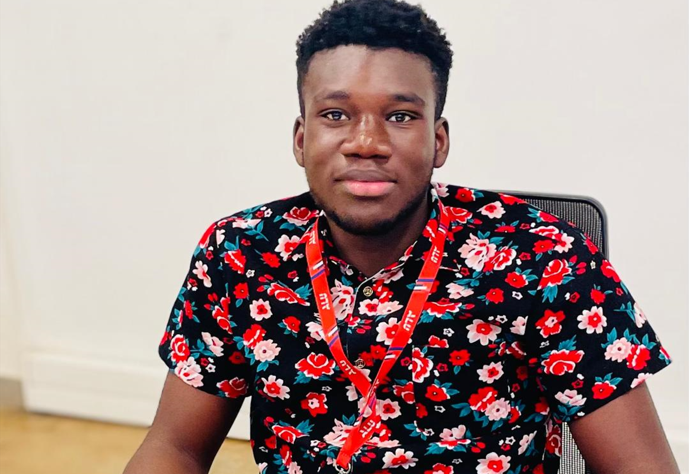

About Me

My name is Innocent Nangah, and I am a web developer currently pursuing a Bachelor of Science in Software Engineering (BSE).
I have always been passionate about technology, and I am now working towards specializing in Machine Learning (ML). ML excites me because of its potential to revolutionize industries by making systems smarter and more efficient. I see ML as the future of innovation, and I am eager to apply it to solve real-world problems.
By combining my web development skills with ML, I aim to build intelligent, data-driven applications that provide impactful solutions and improve user experiences.
Favorites
Volley Ball.

Watching movies.